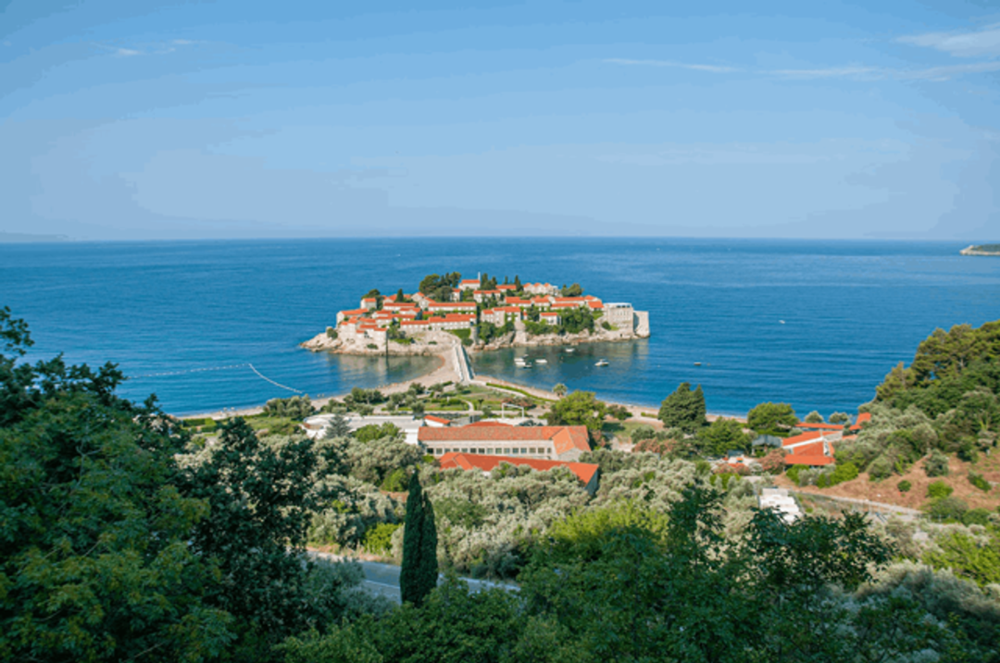
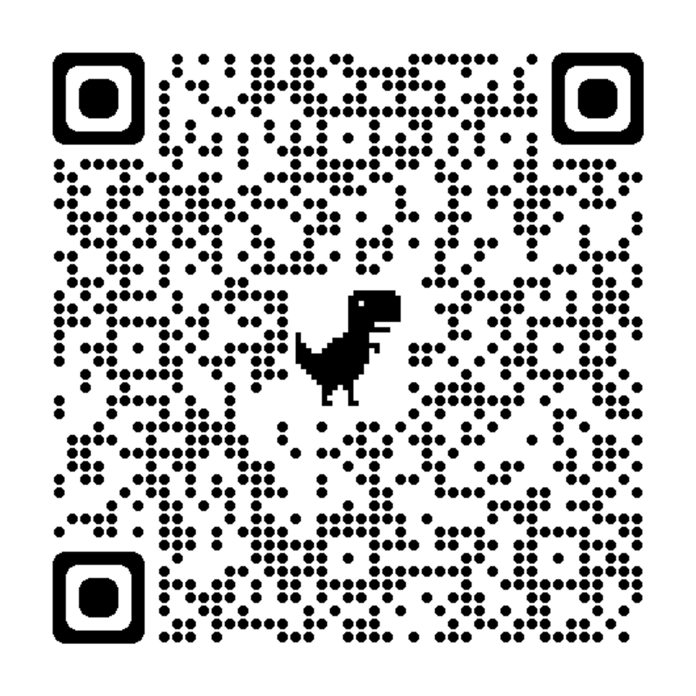
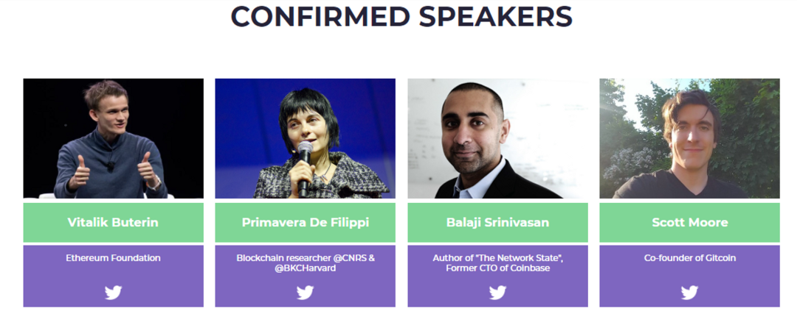
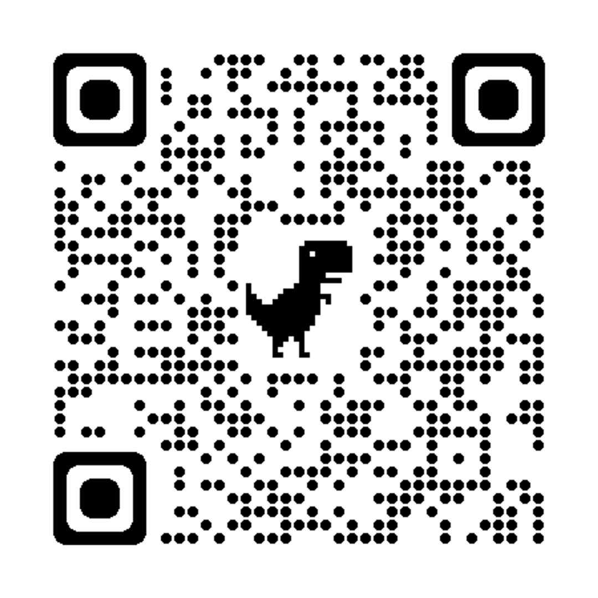

五月的黑山沐浴在初夏的阳光中，人头攒动，来自全球各地的开发者、探索者涌向此处，畅所欲言着在对美国这般大型主权国家的批判——这也是 Denver 所说不了的。
如果我们有机会在这般盛会中筹办一场 DAO Conference，探讨全球 DAO/Network State 探索者所关注最前沿的议题、输出华语 DAO 的作品，就真的有机会成为世界范围内 DAO 世界的一员，与其他探索者遥相呼应、交流经验、共享生态。
或许在这个过程中，我们甚至有机会与海外 DAO 达成战略合作，有机会为社区的成员提供真正具备差异化、稀缺性服务~
你愿意一起加入吗？
活动计划：
在拉美、在非洲、在俄乌战争的难民中，在以太坊社区的团队里，越来越多的人与我们一起共同思考：
我们是否有机会构建一个数字城邦？
我们如何通过 Network State 缔造新的秩序，保护我们普通人在地缘冲突的不利影响中获得更多的选择？
如何连接 DAO 与 DAO，进行跨国、跨领域的资源整合与优化，助力我们共同愿景的落地、提供更多差异化的服务？
如何在数字城邦中促进不同文化、语言和背景的人们的交流与合作，实现真正的地球村？ 畅想在未来，当我们生活在一个完善、流动的数字城邦中，我们的生活、工作、学习、娱乐可能将会是怎样的？
而此刻，我们有机会遇见全球 DAO Builder 与数字城邦探索者，并通过筹办一次 DAO Conference 融入这一场全球思潮。
因此在这次活动中，我们将通过以下形式，展开这一系列议题的探讨：
分享与演讲
邀请全球 DAO Builder、Network State 探索者站上舞台分享自己故事、实践与思考。
工作坊
基于我们所有人都关心的议题，展开深度探讨、共同产出潜在的解决方案与共识。
圆桌对谈
邀约不同受众、地域的的顶尖 Builder，对一系列问题展开对谈，尝试存照出 DAO to DAO 建立国际合作的可能。
After party
主会场之外深度聊天局，聊天、交流、BD 首选~

招募启事：
为了顺利举办我们的活动，我们正在寻找一系列同频的伙伴加入我们的团队。
需要招募的岗位：
职责：负责与活动内容策划一起对外邀请嘉宾和合作伙伴，并对外拉赞助。
投入时间：50天，每天至少2小时
悬赏：30000积分+900U
职责：负责中文方面的对外联络和活动推广，招募最优质的嘉宾与项目方。
投入时间：50天，每天至少1小时
悬赏：15000积分+540U
职责：负责英文方面的对外联络和活动推广，邀约海外优质 Builder 与项目方一起加入。
投入时间：50天，每天至少1小时
悬赏：15000积分+540U
职责：负责对接场地和黑山当地的活动公司，追踪项目物料生产、活动流程、现场人员调度，确保活动在黑山落地。
投入时间：投入时间：50天，每天4小时
悬赏：60000积分+1800U（现场活动落地的预算会在项目团队中自行分配）
已有成员：漓江、1酱
特殊要求：最好已经在黑山、确保一定会去到黑山
职责：活动的事前、事中和事后的英文宣传，参与 SeeDAO 英文推特起号、发布英文文案、与合作方互动、发起&主持推特Space 等
预计投入：50天，每天投入时间至少1小时
悬赏：15000积分+540U
负责活动官网、Deck、海报、线下展板等物料的主要视觉设计
悬赏：600U
职责：记录项目的财务支出，保留财务支出凭证，协调资金发放。
预计投入：时间50天，每天投入时间至少0.5小时
悬赏：7500积分+225U【招募】
职责：带领大小工作坊，在活动现场通关一系列问题，帮助工作坊落地
预计投入：前期策划+现场执行，合计约 10h
悬赏：5000积分
其它已经招到人的岗位：
由瓦猫之夏原活动负责人漓江担任，唐晗辅助。
负责拆分任务，盯会议筹备和执行进度，对活动落地效果负责
投入时间：55天，每天至少4小时
悬赏：66000积分+1980U
由唐晗、白鱼和定慧组成的工作小组共同完成。
负责配合活动制定活动内容和线上推特space内容，制定活动对外介绍，负责官网文字
投入时间：50天，每天至少4小时
悬赏：66000积分+1980U
定慧
负责做好活动的事前、事中和事后的中英文宣传，撰写活动文案和海报制作，包括公众号、推特Space、小红书等
悬赏：15000积分+540U
阿豚。
负责做好活动的中文宣传，撰写活动文案和海报制作，包括公众号、小红书等（
悬赏：15000积分+540U

如果你准备来到黑山，欢迎联系定慧加入微信群
更多现场活动介绍
WHAT IS EDCON 2023?

5.20 有V神的演讲！
5.21 将会是一场借鉴了【联合国大会】的 Community Activity Day，将会有全球代表来到现场共同探讨彼此的命运于 ETH 的未来！
5.22-5.23，将会是 EDCON 大会的主场，期待~

已经前往黑山数字游民基地 zuzalu 小伙伴的一线战报：
《黑山来信 | 铁托雕像前的鲜花，和电视上的Do Kwon》
更多 Zuzalu 介绍：https://www.vitadao.com/zuzalu
内容来源：定慧